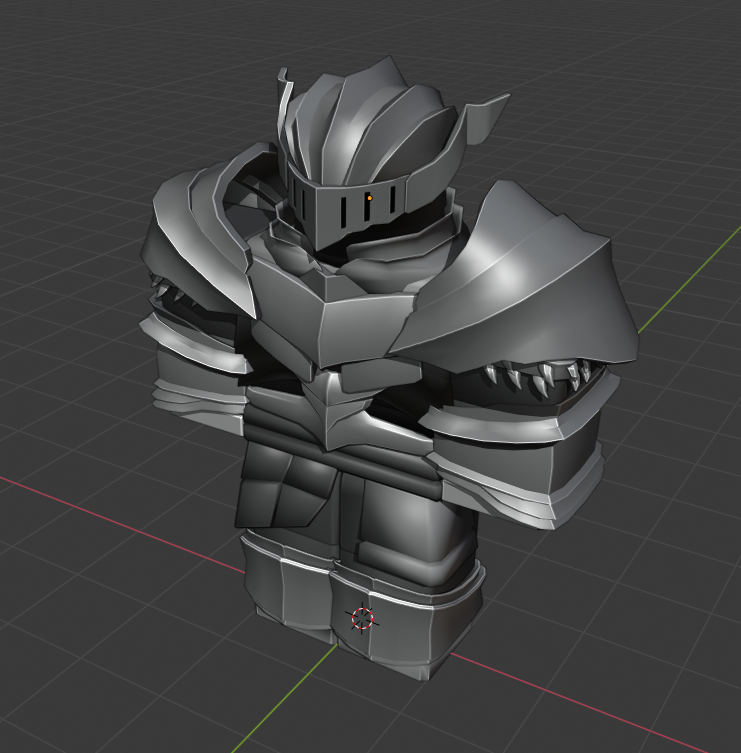

Reverie & The Creation (Year 0)
She basically toys with the humans. She’s an immortal being that created the land of alitia and enjoys watching strong bloodlines massacre themselves. She’s evil despite appearances. People believe what they want, some think she's a false god, some think she's the god of everything Some believe she's just a god that reigns over life and death and some don't believe in her existence whatsoever Legend says those who visit reverie lose all their memories except from a chosen few, those are the people that’ll keep some skills
Magic & The Priestess Astra (Year 297)
There was once an elven girl named Astra (15 years old) who lived with her parents, brother, and sister Hestia (12 years old) in the land of Efolona. She had everything she ever wanted, love, friendship, family, and was known by everyone in her village. She loved to read and enjoyed sharing stories with both her closest friends and siblings. One day out of the blue, a human army from an unknown land was sent by a higher-order to take over the land of Efolona. What followed next was endless bloodshed; Elven warriors riding their hounds with swords and bows and arrows defending their land human warriors attacking with their swords, maces, horses, and armour. Their motive behind the attack was unknown as whenever a warrior was taken prisoner and interrogated, they would refuse to cooperate, many of which ended their own lives (committed suicide) with the various tools at their disposal (Poisonous tooth pill, cliff jumping, smashing their head against prison cells, etc). These warriors were clearly extremely loyal to whoever sent them. During this unprecedented war, villages were told to flee to the capitol where they’d be protected by the elven heroes there. On the way to the capitol, the party from Astra’s village was ambushed by a group of warriors. Many of them losing their lives trying to fend them off, including Astra’s older brother, her father, and her mother, leaving a few village folks, her older sister, best friend, and boyfriend left. They were taken prisoner by the Human army and were interrogated being asked to reveal information on how to take down the capitol. As none of them had ever been to the capitol, they were deemed disposable by the interrogators who executed the remaining villagers one by one in the cells they were being held captive. Eventually, they get on to Astra’s boyfriend who she begs them to stop for. The soldiers laugh and then put a spear through his chest which traumatises her, they then get on to her sister to humour Astra even more who Astra now completely silent stares in trauma. The guards mocking her more put a blade to her sister’s throat who is screaming and crying. Astra let out a faint “Stop… this” as the guards laugh more about her trying to prevent the inevitable. They raise the blade asking Hestia if she has any last wishes they don’t care for. Astra quietly says “Please… I can’t lose her too” which the guards happily mock. They swing the blade to end Hestia’s life in which Astra responds yelling “I SAID STOP”. As the blade touches Hestia’s neck, a massive surge of energy is released from Astra which causes the guards to freeze in their places. One guard yells “What the hell was that?!” And one by one they start hitting the floor screaming in agony. Hestia then unconsciously blows them away through the walls of the building and frees her sister from her chains not saying a word, clearly lost in the power. She then heads to the front line of the battlefield and annihilates the invading army with meteors, bottomless pits, portals that suck the humans into another world, and many more magical phenomenons. Nothing is known about what happened to the humans who got sucked through the portals. Astra was then titled the Priestess of Magic and saviour of Efolona. This interaction caused the Elven race to despise the Human race despite many humans not knowing of the existence of the army. Astra not knowing how to control her power noticed that she could share a portion of it with anyone she touched. (Eventually, everyone figured out that if a spell was used on someone, they’d unlock the ability to use magic due to some “unlocking gene”) The capitol leaders used this to ability to increase their attack and defences immensely by giving all elves power. Some elves went corrupt with the power, some became heroes of their own stories, and the rest just went about their every day normal lives with magic now as a tool at their disposal. After Astra had shared her newfound power with the rest of the region, she requested to leave the region, unguarded, in order to “mourn her friends, family’s, and boyfriend’s death” leaving Hestia in the capitol alone surrounded by strangers. Her true intentions were to use her newfound abilities to wipe out the Human race, however, she had to spend 3 years learning how to use and control her powers.
The Dark War & The Priestess / Witch of Death (Year 300)
Astra wasn’t seen until the year 300 where she began attacking Human empires and leaving them in ruins. She would always spare the children but as they no longer had parents or anybody to look after them, most perished. She was titled the Witch of Death by the Humans and word of her slaughters were passed between various regions throughout the world. The Humans asked other regions to help in the war against the priestess however none other than close Human ruled empires came to her aid. The ones that were far from the frontlines decided to hang back as they felt if they remained inconspicuous, the priestess wouldn’t notice them. This wasn’t the case as they were eventually eradicated as well.
The Goddess Hestia, The Witch of Death, and The Sea (Year 307) (The main lore)
Hestia decided she wanted to leave the land of Efolona with a handful of guards from the capitol to teach the world about the wonders of magic. She had never seen other regions before, only read about them in storybooks, but every land and region she had visited around Efolona was nothing like the brilliant places her fairytales made them out to be, they were all in ruins. Corpses left scattered across the lands, and terrain that had been destroyed by some unknown entity. After months of exploring and trying to understand what happened to these places and why they were so different to what she dreamed, Hestia and her few guards found themselves in a ruined street where they were in the process of deciding to end their journey and return back to Efolona. This is the moment a Human man (Elyan), 22 years in age, ran out of a beat-up shop with a poorly made iron sword and charged right for Hestia. One of her guards immediately took action and disarmed Elyan with the swift movement of his hand and the force of powerful wind that followed. The young man, Elyan stood still as if he was frozen completely solid and stared anxiously towards Hestia. Hestia looked towards the man and asked him a simple question, “why are your eyes full of hate for an elf you’ve never met before?” Silent, still, and question unanswered, tension builds even more. “I’LL KILL YOU!” Elyan screeches before forcing himself towards Hestia with his bare hands.
Unnamed Kingdom (Year 870)
In a once beautiful kingdom, the princess of the land was adored by many. She was greatly fascinated by the wonders of the magic that made the world feel special. Fire spells, healing spells, party spells, they were all amazing to her. A corrupt prince had tried the princesses’ hand in marriage many times with the king of the land refusing. After his untimely death and due to having no sons, the princess was appointed the next ruler of the kingdom. The Queen ruled with great just for a decade whilst year after year, the prince would come to the land and ask for the Queen’s hand in marriage. The Queen declined every time until she eventually called him a disgrace to his kingdom and a disgusting prince. This angered the prince who, once becoming king, decided to march an army on the queen’s kingdom. After visiting the land so many times he knew the best places the army could enter the kingdom suffering minimal casualties. The Queen’s land wasn’t prepared for the unexpected assault and their best defenders were wiped out in a day, however, she was able to escape the land by sea with the help of a few of her loyal subjects. Nobody knows where she is now. The prince became the king of the land and ruled as a dictator, and all the Queens followers were executed if they had proved to be loyal to her. The prince believed that the queen had rejected his hand in marriage due to the fact that he didn’t know any magic. As a result, the prince, new king, deemed the possession of magic high treason, punishable by death. As the king controls two kingdoms, his followers from kingdom one are allowed to come and go as they please however the followers from kingdom two have to request permission from him himself which he can choose to accept or deny whenever he feels like it. His followers from kingdom one love and support the way he rules with an iron fist. Some of his followers (although most wish they weren't) from kingdom two were plotting a coup before a spy figured it out telling the king who then proceeded to wipe out half of kingdom two’s population (that came from the queen). Kingdom two’s followers have not only lost their loved ones and all hope, they resent the king and are desperately hoping for their true ruler.
The School Of Magic & The First Magia (Year 578)
Elves were the strongest magic users so they made the school of magic as a sign of peace with all races Many elves disagreed and still resent Humans even though they never experienced the war. Bejitarians were the first to attend with one bejitarian dedicating so much of his time into it that he created the first magia. He tried to make his magic stronger by pouring his own life force into his spells. He backfired horribly on his first attempt, and as a result his magic took on a sentient form that somehow was much more powerful than the sorcerer himself. This new being composed of pure mana has the ability to wield it as if it were as easy as breathing, and had a slight resistance to magic spells.
Magia Immigrants
The School Of Magic was home to many magia’s. Despite this many sought a different lifestyle. Many magia’s left the school of magic to travel the Boundless world. After years of traveling and many dying during the process, they arrived at a very interesting island. This island held unique hues of plants never before seen, and just as many plants already seen but much bigger than their normal counterparts. Upon investigating and finding a fruit appearing to look like an apple, this fruit was glowing and radiating strong energy. You could feel its power if you held it, but it wasn’t “power” in a sense.. It felt calm.. Natural.. This island, somehow was taking in the mana around the world and using it to help all life on it prosper. Birds were infused with mana, flying at blisting speeds, mushrooms emitting a bright light from their spots, and even the grass which is known to be a vibrant green now boasted a blue hue, and felt like soft fur when you touched it. After generations of living on this new island, some magia’s started an organization to help protect their citizens and all inhabitants of the island. This organization was called the White Clover, and it’s full of powerful mages that are one with the life energy of Mana and serve to protect all life precious in the world.
Sneak Peeks

Social Links